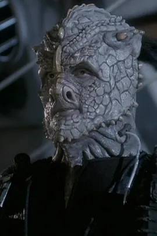

The genetics
The Jem'Hadar are genetically engineered soldiers, and this episode, which introduces them in detail, is a test of nature against nurture. Bashir deduces the engineering from the boy's accelerated growth, and the crew discover that the Founders have built in a dependence on a substance that only they supply, a way of guaranteeing loyalty. Odo's attempt to give the boy free will through patient upbringing fails, because his aggression and his reverence for the Founders are presented as part of his genetic design. The story sides firmly with nature: Odo admits to Kira that she was right and the boy could not be changed. The Founders appear only through their creation, but they come across as cynical engineers of obedience. Real genetics offers nothing like this: behaviour is influenced by many genes and by experience, and there is no known way to engineer loyalty or a fixed drive to kill.
How genetics is portrayed
- Overall portrayal of genetics
- negative Genetic engineering is shown as a tool for building obedient killers whose programming cannot be undone by upbringing; Odo concludes that the boy could not be changed.
- Outcome of the genetic intervention
- negative The engineering produces a boy who matures in days into a soldier who can only fight; Odo's attempt to teach him free will fails, he threatens Sisko with a phaser and returns to the Dominion.
- The Founders (Dominion)
- villain Aim: military, power (negative). The Founders engineered the Jem'Hadar as a soldier species with programmed aggression, reverence for the Founders and a built-in dependence on a substance only they supply, which the crew read as a mechanism to guarantee loyalty. They appear only through their creation, but the episode presents this as cynical control.
The story
Quark buys salvage from a wrecked ship and finds a baby inside. In the infirmary Dr. Bashir measures an extraordinary metabolism: within hours the infant grows into a boy and then a teenager, though he is biologically only weeks old, which Bashir can explain only by advanced genetic engineering. The aggressive youth turns out to be a Jem'Hadar, one of the Dominion's engineered soldiers, and he instinctively reveres Odo as one of the Founders, the shapeshifters who rule the Dominion. Starfleet wants him sent away for study, but Odo, once a research subject himself, takes charge of him and tries to teach him to think for himself and control his aggression. They learn that the Jem'Hadar depend on a substance only the Founders supply. When the boy threatens Sisko with a phaser, Odo takes him through the wormhole and lets him return to his people.